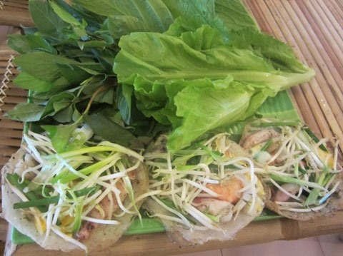
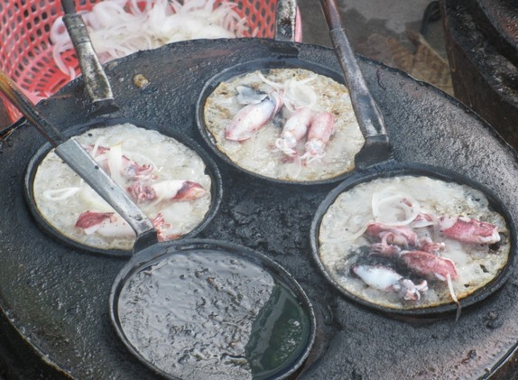
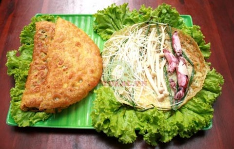
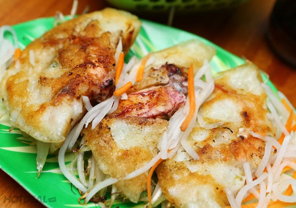
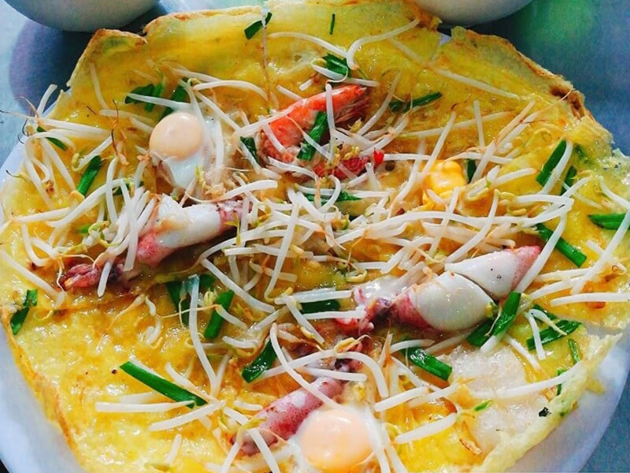

Specialty of Nha Trang: Squid Pancake
The beautiful sea beach of Nha Trang not only lures visitors for its romantic nature and landscapes, but also for its culinary specialties, including banh xeo muc (squid pancakes).
Crabs and clams; shrimp, squid, and shellfish; fresh, fermented, steamed, or stir-fried… the seafood in Nha Trang, however, it’s prepared, is widely considered the best seafood in the country. Just north of the Tran Phu bridge, a string of seafood restaurants lines the ocean road. Point to the catch you crave from the live display swimming in buckets or chilling on ice. The waiter will charge you for your choice by kilogram and ask you how you want it cooked. Spend the evening here with a group of friends, feasting on the freshest possible seafood while the ocean wind sets the mood.

The beautiful sea beach of Nha Trang not only lures visitors for its romantic nature and landscapes, but also for its culinary specialties, including squid pancakes (bánh xèo mực).
The food is a pride of Nha Trang since coming into being almost a century ago. It has a place in the heart of locals, and is a must-try for visitors, said local food expert Nguyen Thi Lien, 75.
With its delicious flavor, the crispy pancakes, mixed with sweet fresh squid and shrimp, and dipped into a special sauce, are simply unforgettable, she said.
Different from its cousin in Saigon, where cooks use a pan that needs a lot of oil; those in Nha Trang pour rice mix into small stainless steel frames placed on an earthenware oven. This makes the cake tastier and more enjoyable, said Lien.
She recalls that her mother made and sold squid pancakes to raise her eight-strong family. For nearly 30 years, she woke up very early in the morning to go to the beach and wait for the boats to return from the sea to buy fresh, live squid, the main ingredient of the dish.
"My mother’s shop is often crowded from the second lunar month to the eighth lunar month, as this is the season for fresh squid,” said Lien.

The ingredients for a four-person serving are as follows: 200g rice powder, 250ml water, 100ml beer, 50ml coconut extract, half a spoon of coffee, half a spoon of salt, and half a spoon of saffron powder, mixed with 200g fresh squid, 200g fresh shrimp, onions, cooking oil, green bean sprouts, fennel, rice papers, and spice.
Lien noted that you must cut off the head and tail of the shrimp, and boil them with the squid. Once they’re done, take them out of the pot and let them dry.
Similar to making other rice pancakes folded in half and filled with shrimp, meat, and green bean sprouts, Nha Trang squid pancakes also use rice powder to make the cover.
"Mix it with saffron powder and salt and pour in water and beer. Stir well until it becomes smooth and then add coconut extract and stir the mix again. The final process is putting onion pieces and a little cooking oil in the mix, and let it sit for 30 minutes before cooking,” said Lien.
She said making sauce for the cake is also important as it provides an aromatic flavor.
You should choose quality fish sauce and mix it with sugar, lemon juice, and minced garlic and chili.

"In the past, my mother often ordered the fish sauce from an acquaintance whose family had been making fish sauce for several generations. Her dipping sauce was highly regarded among diners," she said.
The last process is frying the pancake. First, you should apply a little cooking oil, and then pour a spoonful of mixed rice powder. Next, you add the shrimp, squid, and green bean sprouts to the thin paper. After several minutes the cake turns yellow and an aromatic fragrance can be smelt," said Lien.
Truong Thi Dung, a visitor from the northern province of Cao Bang, said, “Trying the cake with fennel and lettuce and dipping it into the sweet and sour sauce is very enjoyable as it’s a little fatty, its cover is crispy, and inside is fragrant with fresh squid and shrimp, they all combine to make the dish unique.”

Dung said the dish was her favorite during her one-week trip to Nha Trang. She has tried several shops serving it, including Huynh Thi Bay on the corner of Le Thanh Phuong - Tran Quy Cap Streets or on 52 Phan Boi Chau Street.
“My favorite is Nha Trang Xua in Vinh Thai Village, three kilometers from the city center," said Dung. "The shop is located inside a large field and is designed in the traditional style, with a roof made of palm leaves. It’s an ideal place to enjoy squid pancakes and many other traditional dishes.”
Herbalist Nguyen Van Tuat, from the National Hospital of Traditional Medicines, said the dish is good for cooling down the body, and is also very nutritious, making it ideal for sick patients.
He warned, however, that those faced with heavy gout ailments should not eat the dish as it is full of protein.
